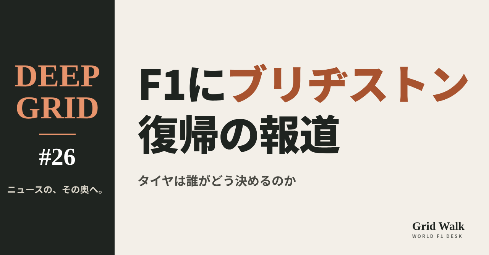
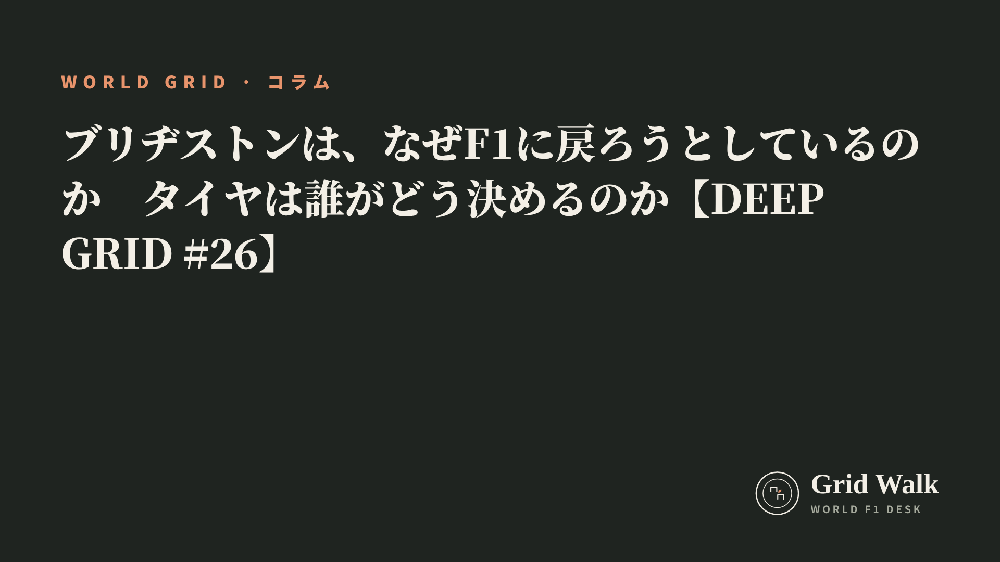

<meta charset="utf-8"><title>DEEP GRID #26 note貼り付け</title>
<style>
/* one column of numbered paste steps; text steps vs image steps differ by marker */
:root{--bg:#F5F4F0;--card:#FFFFFF;--ink:#1D2321;--mute:#5F665F;--line:#DCDAD2;--btn:#1F5FBF;--btnok:#2E8B4F;--img:#E9F3EC;--imgink:#22663B;--sans:'IBM Plex Sans JP','Hiragino Sans','Noto Sans JP',sans-serif}
@media (prefers-color-scheme:dark){:root:not([data-theme="light"]){--bg:#171A19;--card:#202423;--ink:#ECEDE8;--mute:#A3AAA2;--line:#343937;--btn:#4D8BE6;--btnok:#3FA866;--img:#1E2C23;--imgink:#8FD3A6;color-scheme:dark}}
:root[data-theme="dark"]{--bg:#171A19;--card:#202423;--ink:#ECEDE8;--mute:#A3AAA2;--line:#343937;--btn:#4D8BE6;--btnok:#3FA866;--img:#1E2C23;--imgink:#8FD3A6;color-scheme:dark}
body{background:var(--bg);color:var(--ink);font-family:var(--sans);font-size:15px;line-height:1.75;padding:20px 16px 60px}
main{max-width:680px;margin:0 auto;display:grid;gap:28px}
header h1{font-size:22px;margin:0 0 6px;text-wrap:balance}
header p{margin:0;color:var(--mute);font-size:14px}
nav{display:flex;gap:8px;flex-wrap:wrap;margin-top:12px}
nav a{border:1px solid var(--line);border-radius:999px;padding:4px 14px;color:var(--ink);text-decoration:none;font-size:14px;background:var(--card)}
.part h2{font-size:18px;line-height:1.5;margin:0 0 12px;text-wrap:balance;display:flex;gap:10px;align-items:baseline;flex-wrap:wrap}
.tag{font-size:13px;background:var(--ink);color:var(--bg);border-radius:6px;padding:1px 9px}
.steps{list-style:none;margin:0;padding:0;display:grid;gap:12px}
.st{background:var(--card);border:1px solid var(--line);border-radius:12px;padding:12px;min-width:0}
.hd{display:flex;align-items:center;gap:8px;margin-bottom:8px}
.no{width:26px;height:26px;border-radius:50%;background:var(--btn);color:#fff;display:inline-flex;align-items:center;justify-content:center;font-size:13px;font-weight:700;flex:0 0 26px}
.im .no{background:var(--btnok)}
.hd em{font-style:normal;font-size:12px;background:var(--img);color:var(--imgink);border-radius:6px;padding:0 8px}
.bx{font-size:13.5px;line-height:1.7;border:1px solid var(--line);border-radius:8px;padding:8px 10px;max-height:110px;overflow:auto;overflow-wrap:anywhere}
.bx.tall{max-height:150px}.bx p{margin:0 0 6px}.bx h2{font-size:14px;margin:8px 0 4px}.bx a{color:var(--btn)}
.st img{display:block;width:100%;max-width:100%;border:1px solid var(--line);border-radius:8px}
.sub{font-size:12.5px;color:var(--mute);margin:6px 0 0}
.cp{width:100%;margin-top:8px;padding:12px;border:0;border-radius:10px;background:var(--btn);color:#fff;font:600 15px var(--sans);cursor:pointer}
.cp.ok{background:var(--btnok)}.cp.dl{background:var(--btnok)}.cp:focus-visible{outline:3px solid var(--ink);outline-offset:2px}
.xh{font-size:15px;margin:20px 0 10px}
.fb{font-size:13px;line-height:1.7;margin:8px 0 0;padding:8px 10px;border-radius:8px;background:var(--img);color:var(--imgink)}
.opts{display:grid;grid-template-columns:repeat(auto-fill,minmax(240px,1fr));gap:10px}
.opt{min-width:0}.opt img{display:block;width:100%;border:1px solid var(--line);border-radius:8px}
.ol{display:flex;align-items:center;gap:8px;margin-top:6px}.ol b{font-size:13px;flex:0 0 auto}.ol .on{font-size:12.5px;color:var(--mute);flex:1;min-width:0}.ol .cp{width:auto;flex:0 0 auto;padding:9px 14px}.ol .cp{margin:0;padding:9px}
.toast{font-size:13px;color:var(--mute);margin-top:6px}
</style>
<main><header><h1>DEEP GRID #26 note貼り付け</h1><p>1本あります。青い番号は文章、緑は画像です。</p><nav><a href="#p1">#26</a></nav></header><section class="part" id="p1"><h2><span class="tag">DEEP GRID #26</span>ブリヂストンは、なぜF1に戻ろうとしているのか　タイヤは誰がどう決めるのか【DEEP GRID #26】</h2><ol class="steps">
<li class="st im"><div class="hd"><span class="no">1</span><b>見出し画像</b><em>画像</em></div><button class="cp dl" data-img="img/bridgestone-return.png" data-name="deep-bridgestone-return_見出し画像.png">ダウンロード</button></li>
<li class="st"><div class="hd"><span class="no">2</span><b>タイトル</b></div><div class="bx" id="p1t">ブリヂストンは、なぜF1に戻ろうとしているのか　タイヤは誰がどう決めるのか【DEEP GRID #26】</div><button class="cp" data-plain="p1t">タイトルをコピー</button></li>
<li class="st"><div class="hd"><span class="no">3</span><b>本文</b></div><div class="bx tall" id="p1r"><p>F1の全チームが使うタイヤは、いま1社だけが作っている。2011年からはピレリだ。そこへ、2010年にF1を去ったブリヂストンが復帰を狙っている、とオランダのRacingNews365が報じた。F1のタイヤ会社はどうやって選ばれるのか。ブリヂストンはなぜ去り、なぜ戻りたいと見られているのか。入札の仕組み、14年の歴史、いまのモータースポーツ活動、そして反対の見方から読む。</p><p>データの表と、出典38件はサイトで → <a href="https://f1gridwalk.github.io/deep/bridgestone-return/?utm_source=note&amp;utm_campaign=bridgestone-return">https://f1gridwalk.github.io/deep/bridgestone-return/?utm_source=note&amp;utm_campaign=bridgestone-return</a></p><h2>先に結論</h2><p>① 10月26日、オランダのRacingNews365が、ブリヂストンがF1のタイヤ供給への復帰に本気で取り組んでいると、関係者の話として報じた。シンガポールとアメリカのGPに幹部級の専門家を送り、2023年の入札より強い提案を準備している、という。ブラジルのGrande Prêmioは、ブリヂストンもFIAも新しい正式な入札を公には認めていないと書いている。</p><p>② F1のタイヤは、1社が全チームに同じものを配る。その1社は入札（テンダー）で決まる。FIAが技術と安全の条件を満たすかを調べ、通った会社とF1の商業面を持つ側がお金の条件を話し合う。いまのピレリの契約は2025〜2027年で、FIAは2026年6月に延長の権利を使い、2028年まで延ばした。</p><p>③ ブリヂストンは1997年から2010年までF1にいた。2001〜2006年はミシュランとの「タイヤ戦争」、2007年からは1社だけの供給。2009年11月、「革新的な技術の開発に経営資源を振り向ける」として撤退を発表した。2023年の入札ではピレリに敗れている。</p><p>④ 戻りたい理由を、ブリヂストン自身ははっきり語っていない。ただ、2023年にはF1を「世界で最も権威あるグローバルなモータースポーツの舞台」と呼んだ。2024年にオリンピックのスポンサーをやめてモータースポーツに力を移すと発表し、2025年にはマクラーレンにいた今井弘氏を呼び戻した。2026-27年からはフォーミュラEにタイヤを1社で供給する。</p><p>⑤ 反対の見方もある。ミシュランは2005年、撤退を決めたときに、タイヤメーカーどうしの競争が欠かせないと述べた。2023年にはメネゴーCEOが、F1はショーのために自ら壊れていくタイヤを求めている、と話している。お金を払うのはタイヤ会社の側だとも報じられている。次の入札は2027年に開かれる見通しだと、RacingNews365は書いている。ブリヂストンのタイヤがF1に戻るとしても、早くて2029年だ。</p><p><strong>F1のタイヤは、また複数の会社の競争に戻るべきだと思いますか？</strong></p><h2>続きは F1 Grid Walk で</h2><p>ここから先の「何が報じられたのか」「F1のタイヤは、誰がどう決めるのか」「ブリヂストンとF1の14年」「なぜ、いま戻りたいのか」「反対の見方：1社供給は、そんなにいいものか」は、サイトで読めます。F1のタイヤ供給の移り変わり、タイヤ会社の選び方（報道と発表から）、2023年の入札で報じられたお金の話、ブリヂストンの最近の動き（年表）、ブリヂストンのF1の記録の表も載せています。</p><p><strong>DEEP GRID #26「ブリヂストンは、なぜF1に戻ろうとしているのか　タイヤは誰がどう決めるのか」</strong></p><p><a href="https://f1gridwalk.github.io/deep/bridgestone-return/">https://f1gridwalk.github.io/deep/bridgestone-return/</a></p><p>━━━━━━━━━━</p><p><strong>F1 Grid Walk では、世界のF1ニュースを毎日日本語でまとめています。</strong></p><p>海外の記事の要約を、毎日載せています。</p><p>ほかの海外記事も読みたい方は、F1 Grid Walkへ。</p><p><a href="https://f1gridwalk.github.io/">https://f1gridwalk.github.io/</a></p><p>━━━━━━━━━━</p><p><a href="https://racingnews365.nl/grote-naam-lonkt-naar-een-terugkeer-in-f1">出典：RacingNews365（オランダ）</a></p><p><a href="https://racingnews365.com/former-f1-supplier-targeting-stunning-grand-prix-comeback">出典：RacingNews365</a></p><p><a href="https://www.crash.net/f1/news/1108540/1/former-f1-tyre-suppler-plots-surprise-comeback-after-two-decades">出典：Crash.net</a></p><p><a href="https://www.gpblog.com/en/rumors/pirellis-f1-dominance-at-risk-as-old-rival-prepares-sensational-comeback">出典：GPblog</a></p><p><a href="https://grandepremio.com/en/f1/bridgestone-eyes-sensational-f1-comeback-as-pirelli-faces-potential-2029-tyre-battle/">出典：Grande Prêmio（ブラジル）</a></p><p><a href="https://www.formula1.com/en/latest/article/formula-1-and-fia-announce-extension-of-pirellis-global-tyre-partnership-through-2028.7zmagtUQMH0KGPsvBcIqAF">出典：F1公式サイト</a></p><p><a href="https://press.pirelli.com/formula-1-pirelli-confirms-interest-in-next-tyre-tender-process/">出典：Pirelli</a></p><p><a href="https://www.racefans.net/?p=377164">出典：RaceFans</a></p><p><a href="https://www.crash.net/f1/news/911182/1/pirelli-confirmed-f1-tyre-supplier-until-end-2023">出典：Crash.net</a></p><p><a href="https://us.motorsport.com/f1/news/pirelli-set-for-f1-tyre-tender-challenge-as-bridgestone-talk-ramps-up/10479183/">出典：motorsport.com</a></p><p><a href="https://www.grandprix.com/news/pirelli-admits-bridgestone-f1-bid-a-great-challenge.html">出典：GrandPrix.com（GMM）</a></p><p><a href="https://www.grandprix.com/news/bridgestone-tipped-for-f1-return-in-2029.html">出典：GrandPrix.com（GMM）</a></p><p><a href="https://www.grandprix.com/news/bridgestone-admits-interest-in-future-f1-return.html">出典：GrandPrix.com（GMM）</a></p><p><a href="https://www.skysports.com/f1/news/12433/12981193/f1-pirelli-to-remain-as-formula-1s-tyre-supplier-until-2027-after-beating-bridgestone-to-new-contract">出典：Sky Sports</a></p><p><a href="https://www.planetf1.com/news/pirelli-bridgestone-quit-fears-f1">出典：PlanetF1</a></p><p><a href="https://racingnews365.com/bridgestone-responds-to-fia-f1-tyre-decision">出典：RacingNews365</a></p><p><a href="https://car.watch.impress.co.jp/docs/news/1538272.html">出典：Car Watch</a></p><p><a href="https://ms.bridgestone.co.jp/special/document/f1/en/prologue/1996/">出典：ブリヂストン</a></p><p><a href="https://ms.bridgestone.co.jp/special/document/f1/en/episode/2007/">出典：ブリヂストン</a></p><p><a href="https://www.crash.net/f1/feature/164975/1/bridgestones-f1-farewell">出典：Crash.net</a></p><p><a href="https://www.grandprix.com/news/bridgestone-to-quit-f1-after-2010.html">出典：GrandPrix.com</a></p><p><a href="https://www.moderntiredealer.com/industry-news/retail/article/11508231/bridgestone-to-end-formula-1-contract-2009-11-02">出典：Modern Tire Dealer</a></p><p><a href="https://www.as-web.jp/past/fia、f1残留を求め、ブリヂストンを説得">出典：autosport web</a></p><p><a href="https://www.autosport.com/f1/news/82214/bridgestone-no-uturn-on-f1-exit">出典：Autosport</a></p><p><a href="https://www.as-web.jp/past/ブリヂストン「f1復帰の計画はない」">出典：autosport web</a></p><p><a href="https://crash.net/motogp/news/203841/1/bridgestone-to-quit-as-motogp-tyre-supplier">出典：Crash.net</a></p><p><a href="https://www.roadracingworld.com/?p=22836">出典：Roadracing World</a></p><p><a href="https://www.indycar.com/news/2024/09/09-12-firestone-nics">出典：INDYCAR</a></p><p><a href="https://bridgestone.co.th/en/media-centre/press-release/2023/bridgestone_celebrates_60th_anniversary_of_its_motorsport_activities_and_announces_2023_motorsport_plan">出典：ブリヂストン（タイ）</a></p><p><a href="https://www.bridgestone.co.jp/corporate/news/pdf/2023120702.pdf">出典：ブリヂストン</a></p><p><a href="https://www.bridgestone.co.th/en/media-centre/press-release/2024/news-release_-bridgestone-to-reinforce-global-motorsports-initiatives-after-worldwide-olympic-and-paralympic-partnerships">出典：ブリヂストン（タイ）</a></p><p><a href="https://www.as-web.jp/f1/1199801">出典：autosport web</a></p><p><a href="https://car.watch.impress.co.jp/docs/news/interview/2046492.html">出典：Car Watch</a></p><p><a href="https://racingnews365.com/bridgestone-unveil-formula-e-tyres-ahead-of-world-championship-return">出典：RacingNews365</a></p><p><a href="https://www.moderntiredealer.com/industry-news/retail/article/11539258/michelin-single-tire-supplier-to-f1-not-enough-2005-12-14">出典：Modern Tire Dealer</a></p><p><a href="https://www.gpblog.com/en/news/michelin-disagrees-with-f1-rules.html">出典：GPblog</a></p><p><a href="https://www.grandprix247.com/formula-1-news/pirelli-a-tyre-war-would-be-expensive-for-f1">出典：GRANDPRIX247</a></p><p><a href="https://the-race.com/formula-1/f1-cant-risk-all-out-tyre-war-but-theres-another-option">出典：The Race</a></p></div><button class="cp" data-rich="p1r">本文をコピー</button></li>
<li class="st"><div class="hd"><span class="no">4</span><b>ハッシュタグ</b></div><div class="bx" id="p1h">#F1 #F1jp #DEEPGRID #F1解説 #ブリヂストン #ピレリ</div><button class="cp" data-plain="p1h">タグをコピー</button></li>
</ol><h3 class="xh">X</h3><ol class="steps">
<li class="st im"><div class="hd"><b>X用の画像</b><em>画像</em></div><button class="cp dl" data-img="img/x_bridgestone-return.png" data-name="x_deep-bridgestone-return.png">ダウンロード</button></li>
<li class="st"><div class="hd"><b>① noteをシェアするときの文</b></div><div class="bx" id="p1x0">ブリヂストンがF1復帰を狙っていると、オランダのRacingNews365が報じました。F1のタイヤ会社はどう選ばれるのか、なぜ2010年に去ったのか。入札の仕組みと14年の歴史、反対の見方までDEEP GRIDで深掘りしました #F1jp #DEEPGRID</div><button class="cp" data-plain="p1x0">コピー</button></li>
<li class="st"><div class="hd"><b>② ①への返信</b></div><div class="bx" id="p1x1">ほかの海外記事も読みたい方は、F1 Grid Walkへ。
https://f1gridwalk.github.io/deep/bridgestone-return/?utm_source=x&amp;utm_campaign=bridgestone-return</div><button class="cp" data-plain="p1x1">コピー</button></li>
<li class="st"><div class="hd"><b>③ ②への返信</b></div><div class="bx" id="p1x2">毎日の海外F1ニュースは、日本語でこちらにまとめています。
https://f1gridwalk.github.io/</div><button class="cp" data-plain="p1x2">コピー</button></li>
</ol></section></main><script>
function done(b,msg){const t=b.dataset.t||b.textContent;b.dataset.t=t;b.classList.add('ok');b.textContent=msg||'コピーしました';setTimeout(()=>{b.classList.remove('ok');b.textContent=t},2000)}
function selectEl(el){const r=document.createRange();r.selectNodeContents(el);const s=getSelection();s.removeAllRanges();s.addRange(r)}
async function rich(el,b){
  try{await navigator.clipboard.write([new ClipboardItem({'text/html':new Blob([el.innerHTML],{type:'text/html'}),'text/plain':new Blob([el.innerText],{type:'text/plain'})})]);done(b);return}catch(e){}
  selectEl(el);let ok=false;try{ok=document.execCommand('copy')}catch(e){}
  if(ok){getSelection().removeAllRanges();done(b)}else{done(b,'選択しました。コピーしてください')}}
async function plain(el,b){
  try{await navigator.clipboard.writeText(el.innerText);done(b);return}catch(e){}
  selectEl(el);let ok=false;try{ok=document.execCommand('copy')}catch(e){}
  if(ok){getSelection().removeAllRanges();done(b)}else{done(b,'選択しました。コピーしてください')}}
let dlns=null;(async()=>{try{dlns=await window.claude?.use?.("downloads")}catch(e){dlns=null}})();
async function img(src,b){
  b.dataset.t=b.dataset.t||b.textContent;
  if(!dlns){try{dlns=await window.claude?.use?.("downloads")}catch(e){}}
  if(!dlns){b.textContent='ダウンロードできませんでした';setTimeout(()=>{b.textContent=b.dataset.t},3500);return}
  try{const blob=await fetch(src).then(r=>r.blob());b.textContent='保存の確認を開いています…';
    await dlns.save({filename:b.dataset.name,data:blob});done(b,'ダウンロードしました')}
  catch(e){const c=e&&e.code;b.textContent=c==='declined'?'キャンセルしました':c==='rate_limited'?'少し待ってからもう一度押してください':'ダウンロードできませんでした';setTimeout(()=>{b.textContent=b.dataset.t},3500)}}
document.querySelectorAll('.cp').forEach(b=>b.addEventListener('click',()=>{
  if(b.dataset.rich)rich(document.getElementById(b.dataset.rich),b);
  else if(b.dataset.plain)plain(document.getElementById(b.dataset.plain),b);
  else img(b.dataset.img,b)}));
</script>